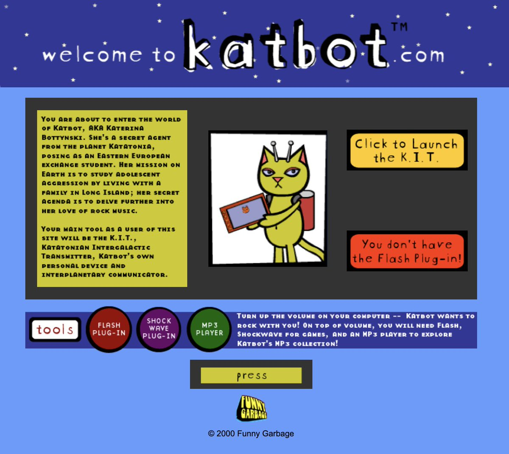
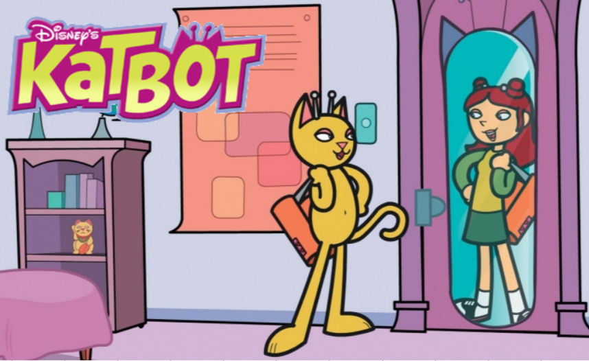
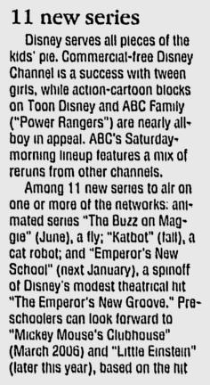
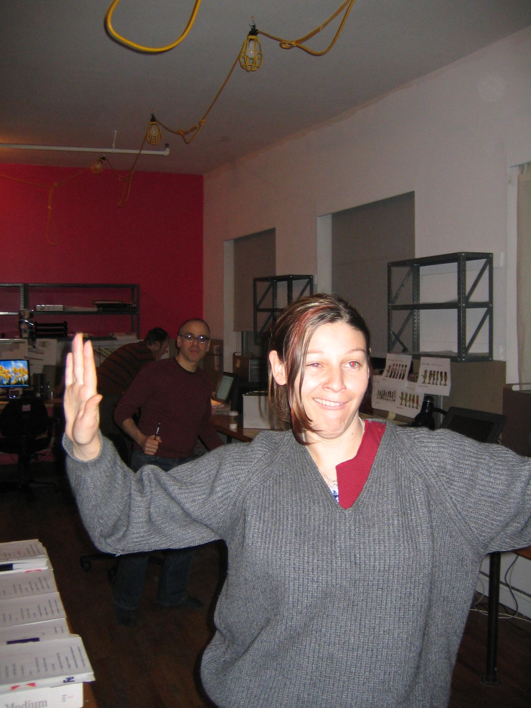
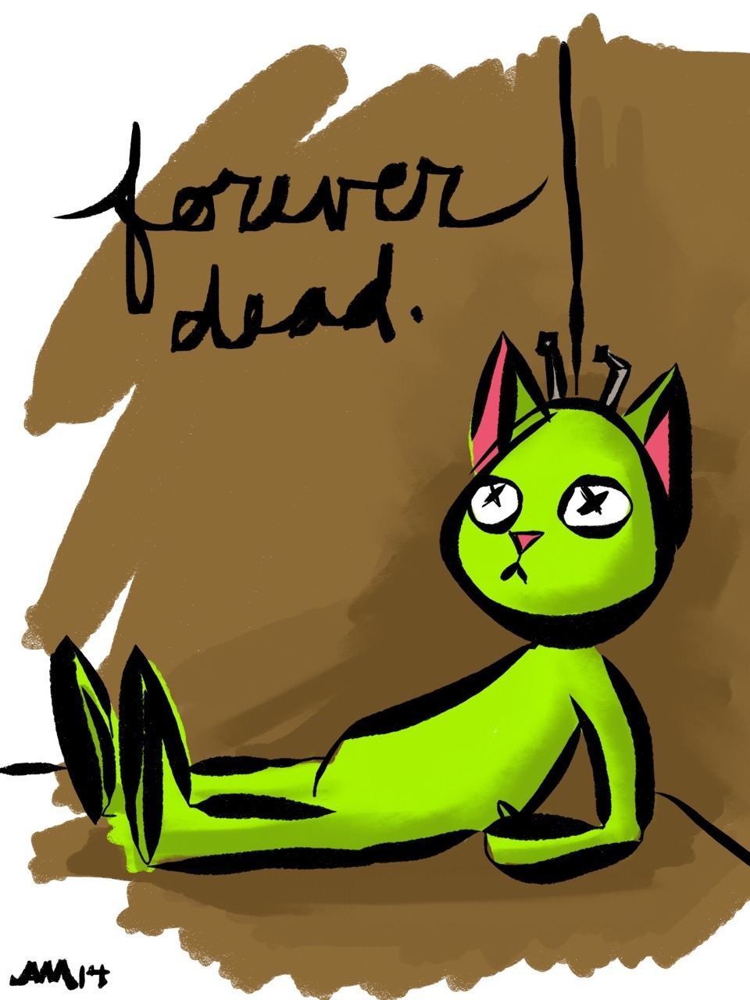

September 26th, 2000 - Funny Garbage launches the Katbot.com website.
September 30th, 2000 - Angela Martini (creator) blogs about the launch of the Katbot website.
This past year has been particularly stressful for me. I've been working on a really extensive creative project at work, which is a major reason I've been slacking off on updating my own websites. I have had exploit all the skills I possess, and quickly learn the ones I didn't. I've created characters and illustrated scenes fantastical to mundane. I've mastered character animation in Flash. I've written in two entirely different character voices, designed a really cool website, and did voice over work. On Tuesday it all came together(with a lot of help from the Funny Garbage tech department, I might add). On Tuesday, Katbot.com launched.
Katbot is a chartreuse alien space Kat from the planet Katatonia. She is a secret agent for the Katatonian Security Agency (KSA) who is sent to Earth on a research mission. Her assignment: to live with a family on Long Island, posing as an Eastern European foreign exchange student in order to gauge the level of teen age aggression that is prevalent in American society. On her off hours she desperately tries to escape her suburban nightmare and rock out to live bands. Katbot is ultracool.
I must say, the launch was anticlimactic. After working on something this long and hard, I don't know. I sort of expected heavenly trumpet fanfare or something, but the web isn't like that. Things get launched; some people see them, other people surf on by.
We've had a lot press about Katbot. This month I was in Newsweek, Wired, Alternative Press, and AWN's Web Animation Guide. It's really surreal to see my name in any publication, unless its in very small type below an illustration. It's good though. The journalists make me sound cool, even though I know I must sound like an idiot when they are interviewing me. My family is really proud, especially about Newsweek. They're not really the Wired types.
I feel weirdly ambivalent about it all. On one hand, It's impressive to be written up in magazines. It's cool that people are excited about Katbot. On, the other hand, I'm really, really tired. Really. I've been at my job for 16 months, and I've only taken 5 days of vacation. I promised myself that I would never do that again, sacrifice my well being for a job. But I keep telling myself that Katbot is different, it's my creation, I have to keep it up.
To be quite honest, the most rewarding aspect about Katbot is getting email from the people who have seen and enjoyed it. That's why I do this kind of creative work. I want people to dig my stuff and then let me know. I like to touch people with the things I create.
I know a lot of my spacegirl readers will like Katbot. At least I hope you do, because if there is one thing that has kept me from running out of steam for the last year, it's been the hope that you will go nuts over Katbot. So check her out, and let me know if you do. I'd really appreciate it.
2004 - Disney acquires Katbot from Funny Garbage and develops it into a TV series.
January 2005 - Disney Channel announces Katbot for a September release.
DISNEY'S KATBOT is a comedy series about a curious, somewhat naïve, fun-loving cat robot Katbot from the planet Katatonia, who as part of her schooling is sent to Earth to study tween culture. By using her hypno-façade, she disguises herself as Katerina Botenski, a foreign exchange student from a small Eastern European country she also calls Katatonia. The only person who knows her secret is her best friend Junior Lebore, the son of her host family. Through her friendships with an eclectic group of earthlings, Katbot experiences life on Earth with a unique and comic perspective. Sherri Stoner (TINY TOON ADVENTURES), Bart Jennett (DISNEY'S RECESS) and John Carlin serve as exec producers. Kristin Ellington is a co-exec producer and Randy Myers (THE POWERPUFF GIRLS, MY LIFE AS A TEENAGE ROBOT) is the director. The series stars Anneliese van der Pol (Disney Channel's THAT'S SO RAVEN) as Katbot, Charlie Schlatter (FERRIS BUELLER television series) as Junior Lebore and Mayim Bialik (BLOSSOM) as Paula. The series is a production of Walt Disney Television Animation in association with Funny Garbage and premieres in September 2005.
March 2005 - Disney Channel announces its Fall lineup, which includes Katbot.
Disney’s Katbot is a comedy series that focuses on a fun-loving cat robot from the planet Katatonia. Disguising herself as Katerina Botenski, a foreign exchange student, Katbot comes to Earth to study tween culture. Through her friendships with an eclectic group of earthlings, Katbot experiences life on Earth with a unique and comic perspective. The series is a production of Walt Disney Television Animation in association with Funny Garbage.
June 8th, 2005 - Angela Martini blogs about the death of Disney's Katbot.
Somewhere along the line I forgot how to write. I guess it had something to do with my journal. I started keeping a journal when I was sixteen. Back then I had a lot to talk about: boys, clubs, drugs, sneaking out, The Smiths, school, friends, adventures. The last few years there hasn't been much to write about. I don't have a regular job any more, so I can't even write about how much I hate it. I spend my days with two cats and a surly chihuahua. They're my co-workers, but they're not too exciting. The water cooler gossip round here is pretty uninspired. My journal entries dwindled to almost nothing. And since I wasn't writing anything private, I couldn't bring myself to write anything public.
Another thing that kept me quiet was Katbot. You know, Katbot, the character/website I created for my old job. A few years ago Katbot was optioned by Disney. We made a pilot. It got shelved for a while, then resurrected into some horrid caricature of what it originally was. To top it off, I was pushed out of the picture. I got the shaft, while all these strangers came in to make my show. It was a very painful time for me. There seemed to be an embargo on all discussion of what was going on and what I was feeling. I was too bitter to get the words out on paper with out sounding like a complete psycho.
As my journal writing slacked off my blog writing suffered. There really isn't much to say when you are constantly depressed and the most important thing going on is something you can't even talk about. Add to this my desire not to sound like an angry freak in case any of my freelance clients happened to read my site. I didn't know how to talk about it at all. I had to act like Katbot was a good thing because the only thing I was getting out of it was my name in the credits, but trying to act like it was all good was all bad. People would email me and congratulate me on having the all mighty Disney make my TV show. What could I say to that? Nothing. I couldn't say anything. I would cringe internally, complain to my husband and ignore the email. Isn't it terrible? The most exciting thing that ever happened to me was also the most humiliating.
I lived in continual dread of one thing: the day Katbot aired.
I no longer have to worry about that.
Katbot is dead. Yes, that's right, Disney's Katbot is dead and gone. They've pulled the plug. It's on the shelf. In the vault. Roasting in it's own private hell. Pass the marshmallows.
Katbot is history.
And that makes me so happy.
A torturous period of my life is over. Since the conception of Katbot I felt trapped. But now I'm free.
And it feels so good.
September 4th, 2005 - Andrew Nicholls writes about his experience on Disney's Katbot.
I was developing (writing) some potential shows for Disney when KATBOT was being handed around as an example to emulate for new series. The Disney-developed show bible did not inspire anyone who saw it. Nor did the other one I was given, Maggie (later, The Buzz On...). I did three shows there 2003-4 and one, W.I.T.C.H., got on the air, but it had comics and product and European oomph to force it along. To be truthful, nobody I know working for any network, now or in the past (I've done this over 2 decades) finds the internally-developed stuff inspiring. Shows work in spite of a network's guidance, never because of it. And they never learn from this, not ever. One Disney comedy animation pilot I worked on for 6 months, Super Cooper (12-year-old girl wakes up every morning with a new and different and often scary super-power -- creator: Steve Billnitzer) was twisted in so many directions away from funny by the folks hired to keep us creatives in line, that I understand it is now being handed around over at the Mouse House as an example of what NOT to do in show development. I fought and kicked at every single step of the way - the art, the concept, the script, the "theme"; the "lesson" (who wants a lesson? Anyone you ever met?) but the unending roomsful of execs always had their way. They always will. The shows you get to see have run a gauntlet that even the most cynical of you will never be able to imagine. Want a peek inside? Check my book on the whole mess, Valuable Lessons, on page four of www.nichollsvickers.com. And hey, thanks to all of the real fans out here... they should test all pilots on you guys, not on randomly-mall-chosen groups of racially- and economically- mixed 9-year-olds. Best, Andrew Nicholls
March 13th, 2007 - Stephen Destefano blogs about Disney's Katbot.
We did nothing but have fun on Katbot.
Whatever happened to that show?
I forget, but here's a photo of show Production Manager B J Kearney rocking out.
I'm behind her, marveling at her rockingoutedness.
Behind me?
The mysterious Jackson Publick (creator of the Venture Brothers) not rocking out.
YET!
October 30th, 2014 - Angela Martini posts her last Katbot artwork, depicting the death of Katbot.
2016 - Funny Garbage closes down, leaving Disney the sole copyright owner of Katbot.